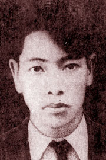

Con quan nguyên thượng thư Phạm Liệu. Sinh ngày 3 Mars 1920 ở Trừng giang, phú Điện bàn (Quảng nam). Học: trường Quốc học Huế, trường Mỹ thuật Hà nội.
Đã đăng thơ: Tao đàn, Mùa gặt mới.

.
Lần đầu tôi xem thơ Phạm Hầu trên tạp-chí ‘‘ Tao-đàn’’, những bài thơ in bằng một thứ chữ chắc chắn, đậm nét. Lần ấy tôi bỏ qua. Hôm nay đại khái cùng những bài thơ ấy, tôi lại thích. Sự thay đổi đó tôi tin rằng một phần cũng vì những bài tôi xem hôm nay đều do tay tác giả chép bằng một lối chữ khác hẳn lối chữ Tao đàn ngày trước. Những chữ mảnh khảnh, nhỏ nét, nằm trên trang giấy như còn e thẹn, ngập ngừng. Lối chữ này đã giúp tôi hiểu Phạm Hầu dễ dàng hơn. Ở đời có những người nói to bước vững; Phạm Hầu quyết không phải trong hạng ấy. Ở giữa đời, Phạm Hầu là một cái bóng, chân đi không để dấu trên đường đi. Người còn mải sống với mình và con người ta tưởng không có gì là một người giàu vô vạn. Lòng người là cả một vọng hải đài [1], người chỉ việc đứng trên đài lòng mà ngắm ; qua lại thiếu gì mây sớm gió chiều. Một buổi trưa bình yên người thấy:
Có cái gì chuyển thay đây với đó,
Một cái gì lên xuống mãi không thôi.
Lắng càng lâu càng nghe mãi xa-xôi....
Một tiếng nhẹ trong tiếng nào nhẹ nữa.
Cho đến khi yêu, người vẫn ưa nhìn lòng mình hơn nhan sắc người yêu:
Gặp tình cờ song chẳng biết vì đâu
Chân em trắng vậy mà lòng anh lạnh.
Cái màu trắng kia tưởng ở trong lòng người thơ nhiều hơn là trên chân người đẹp.
Thơ như thế mà in ra bằng một thứ chữ chắc chắn, đậm nét thì thực lệch lạc cả. Hồn thơ là một cái gì rất mong manh, có khi chỉ một tí cũng đủ làm tiêu tan hết. Không lẽ mỗi bài thơ - không, mỗi câu thơ - in một thứ chữ, nhưng phải như thế mới có nghĩa.
Octobre 1941
Chiều buồn
Tôi đã dám cầu xin hai giọt lệ
Trên mi nàng huyền bí vẻ say mê
Cho điệu buồn man mác tự đâu về
Đưa ngọn cỏ theo chiều mây lặng lẽ
Cho tôi được nghiêng kề nàng thỏ thẻ
Vì lời yêu rên siết ẩn trong tôi
Chỉ khi buồn may mới thoáng qua thôi
Mà hương lệ đó là trang sổ quý
Buồn len lỏi trên đầu cây, thi vị
Gieo lệ vàng trên ngấn nắng chiều trôi
Tôi kề nàng môi chạy kiếm làn môi
Lời tôi lặn trên môi nàng rung động
Yêu đương đến tất cả chiều mơ mộng
Buồn nhẹ nhàng trong làn khói thu không
Buồn mơn man trên đầu tóc rối bòng
Và vơ vẩn bên đôi người vô tội
Nàng và tôi, nhánh sầu chung rễ cội
Kề vai nhau khi lệ với chiều, rơi
Khi giọt sương âu yếm nhỏ lên người
Nàng và tôi là hai dòng lệ nối.
(Tao đàn)
VỌNG HẢI ĐÀI
Chẳng biết trong lòng ghi những ai
Thềm tim từng dội gót vân hài
Hỡi ôi! Người chỉ là du khách
Một phút dừng chân vọng hải đài
Cơn gió nào lên có một chiều
Ai ngờ thổi tạt mối tình kiêu
Tháng ngày đi rước tương tư lại
Làm rã chân thành sắp sửa xiêu
Trống trải trên đài du khách qua
Mây ngày vơ vẩn, gió đêm là
Muôn đời e hãy còn vương vấn
Một sắc không bờ trên biển xa
Lòng xiêu xiêu, hồn nức hương mai
Rạng đông về thức giấc hoa lài
Đưa tay ta vẫy ngoài vô tận
Chẳng biết xa lòng có nhũng ai?
(Tao Đàn)
Chú thích:
[1] Xem bài ‘‘Vọng hải đài’’ trích theo đây.